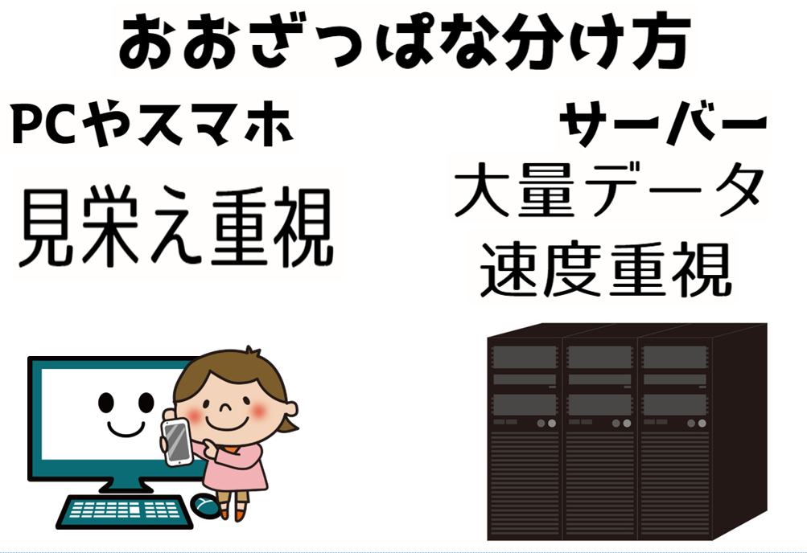
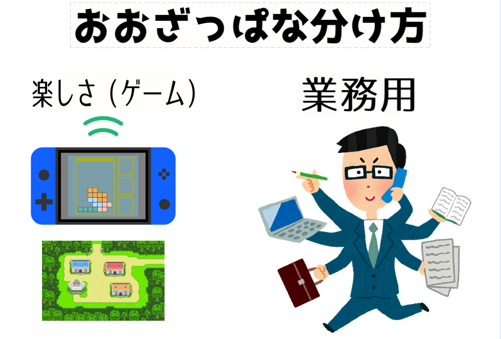
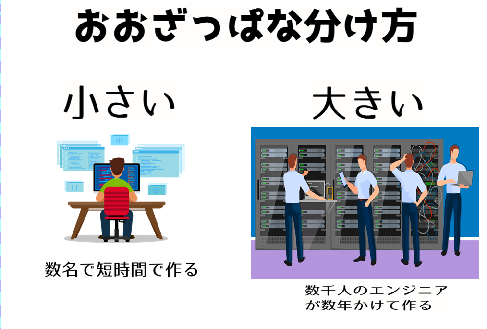

■ 自己紹介
有限会社アイ.タイムズ ＋ ミライロジック株式会社。
趣味：プログラミング、ときどき 三線。
プログラミング業界のなかで３０年ほど。
奄美市名瀬末広町でプログラミング教室。
いまは新しいゲームエンジン制作にはまってます。
プログラミングが活躍する場面
フロントエンドとバックエンド

皆さんがよく目に触れるのは フロント系です。ＷＥＢサイトやスマホアプリなどで目に触れる部分をフロント系と呼びます。 フロント系はみなさんの手元にあるＰＣやスマホの中で動くプログラムです。 表示するためにデータを加工したりする部分がバックエンド系です。 バックエンド系は大勢の人のＰＣやスマホのデータを集中管理するコンピューターのプログラムです。
娯楽向けとお仕事向け

小さなシステムと大きなシステム

いまから数十年前の話
みんなと同じ
中学高校はまったくコンピューターやプログラムのことは知らなかった
大学の数理系の研究室で数理計算のプログラムを作ったのが最初かな
大学時代、お金持ちの友達が当時高級品のパソコンを買ったので、プログラム雑誌のプログラムを打ち込んで遊んでいたりした わけのわからない文字を打ち込むとゲームっぽいのがうごいて感動したのを覚えています
大学の後、就職した会社が東京のソフトウェア開発会社
このころから 仕事としてプログラミングをはじめました
ＩＴの急激な変化
１９６０年ごろ～（研究者、専門家の時代）
特別な人たちだけの世界（国、研究者、専門技術者）
１９８０年ごろ～（特別な何か？の時代）
民間の会社も使うようになってきたが、超大手の会社だけ。
まだまだ普通の人たちからみると「特別なエタイのしれないもの」
ふつうの人間には厳しいプログラミングの時代
プログラマーって『なにそれ？』の時代
コンピューターにかかわる人たちは奇人変人（オタク）の時代
２０００年ごろ～（インターネットの時代）
インターネット/ＷＥＢが急速に拡大、それにともない知識が世界中に拡大、新しい分野を開拓しようとする企業が増加
人間にやさしいプログラミングを目指そうとする意欲が高る
プログラミングのすそ野はちょっとだけ広がる
２０１０年ごろ～（誰でもプログラミングの時代）
インターネットを使うことが当たりまえの時代になった。きれいな見栄えのよいサイトが人気になる時代に。
良いＷＥＢサイトがないとビジネス難しい時代に。
ＷＥＢサイト、ＳＮＳなどで、知識をリアルタイムで伝え合う時代になった
ＩＴエンジニアの認知度が高まる、みんなが気軽にプログラミングを始められるようになった
プログラミング関係の知識を教え合うサイトが増えた
プログラミングすることが普通のことになった、プログラミングを早期教育すべき！の声がすこしづつ出始める
２０２０年ごろ～（ＡＩが生活の一部になる？）
ＡＩが楽しいものになってきた（遊び）
ＡＩが役にたつようになってきた（医療分野とか）
画像生成や作曲の分野にもＡＩが進出（まるでプロ）
いろんなことを教えてくれる、ＡＩだと気づかないようなものに成長（まるで人間？）
ＩＴ業界（特にプログラマー）の仕事の仕方
一日中、キーボードをカチャカチャしてモニター眺めて、一人でもくもくと没頭しているような気がしませんか？
そう思ったひとは、思い違いをしています。
私はコミュ症ぎみ、誰とも話しをしないで仕事ができるプログラマーが向いているかも！ それも間違えています。
プログラマーは まわりの人間とかかっていかないと仕事が進みません。独りよがりでは仕事ができないんです。
なぜなら、一人でできる仕事はほとんどないからです。（ 世界に数十人しかいないような 一部の大天才 の人は一人で仕事できるかもしれないけどね ）
皆さんに伝えたいこと
「将来はゲームプログラマーになりたい」って人とときどき話すことがあります。
ゲームプログラマーのためにプログラミングを勉強したほうがいい！ ⇒ 中学を卒業したらＩＴ関係の専門的な学校に行きたい（いや行くべきだ）
学校の勉強が好きになれないから、数学なんて役にたたないよ！、理科、社会、英語、なんのために勉強しているのかわからないよ！ゲームクリエーターになるんだから、プログラミングの勉強を早く始めないと間に合わない（とあせる）
と話してくれたりします。
好きなものがあるのはよいことですし、夢をもつことはいいことです。得意なことを作ることも大事なことです。
でもよく考えてみてください。
小学校・中学校は無償！国民の税金で成り立っています。
全然役にたたないことを大金をとうじてやっているわけがないじゃないですか？役にたたないと思い込むのは間違ってない？
学校の勉強がとても素晴らしい、１００点満点です！とまではわたしはいいませんけれど。
切り捨ててよいわけではないですよ。思いもよらないところで役にたつのですよ。
先端的なＩＴ技術は英文で発表されることがおおいし、プログラミング言語は英語を基礎にしている。
魅力的なゲームは、
魅力的なキャラクターデザインがある ⇒ お絵描きが上手、漫画かくのが好き な人が向いているかも
シナリオがしっかりとしている ⇒ 物語を読むのが好き、考えるのが好き な人が向いているかも
ニッチな分野を掘り下げてファンを獲得 ⇒ 城が好き、古代史がすき、アニメが好き、歴史がすき、な人が向いているかも
好みをついてくる ⇒ 人の気持ちがわかる人、お話しするのがすきなひと、喜ばせるのが好きなひと が向いているかも